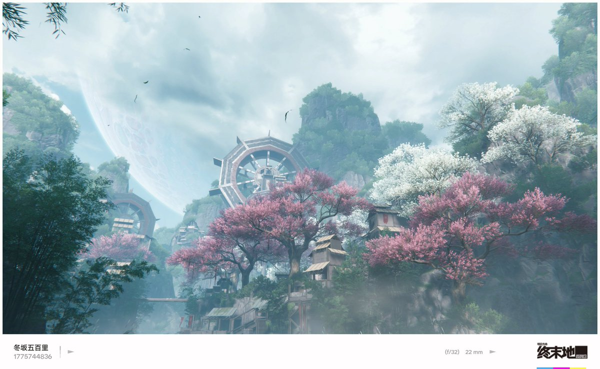
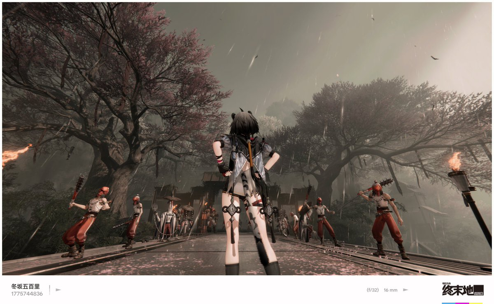
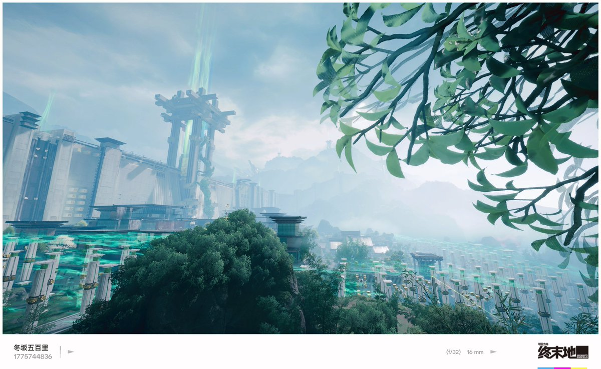

空光
@Vo1dLight
@fuyusakaiori_ 感觉剧情高潮点有点靠前，我以为boss打完不说立马自由探索也过了个七七八八，结果后面还有好长一段



ふゆさかいおり
@fuyusakaiori_
[運命の流れ 其十九]
终末地版本更新其实还比较满意，虽然地图没有采石场2.0，但是小版本还凑合
剧情对汤汤的塑造还可以，不过问题就是他哥成纯粹的工具人了，太小丑
演出感觉更好了，场景转换，表情特写，象征义的镜头，甚至希区柯克变焦都来了，比什么黑底白字强多了吧我看 https://t.co/vkmAoflCyI